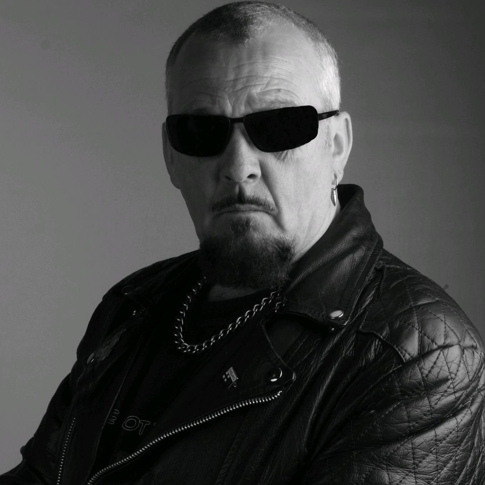

He was there first
In 1969, in the Black Country, Al Atkins and his old friend Bruno Stapenhill formed a heavy band. Bruno suggested a name from a Bob Dylan song: Judas Priest.
Al sang and wrote the songs. When the first line-up fell apart, he joined K.K. Downing, Ian Hill and John Ellis, three musicians rehearsing without a singer, and brought the name with him. In 1972 alone they played more than 150 gigs, opening for Thin Lizzy and Status Quo.
In May 1973, with a young family to support and still no record deal, he stepped away. He let Downing and Hill keep the name and the songs he had written with them. Those songs ended up on Priest's first two albums, Victim of Changes among them.
Then he kept going: Lion through the seventies, his own studio in the eighties, solo albums from 1990, Holy Rage, five records with guitarist Paul May, and Reloaded with Ian Hill, Roy Z and Ralf Scheepers. More than sixty years after he first sat behind a drum kit, he is still making records.
“I left Judas Priest in 1973 but gave the band permission to use the name and the songs I had written with them.”